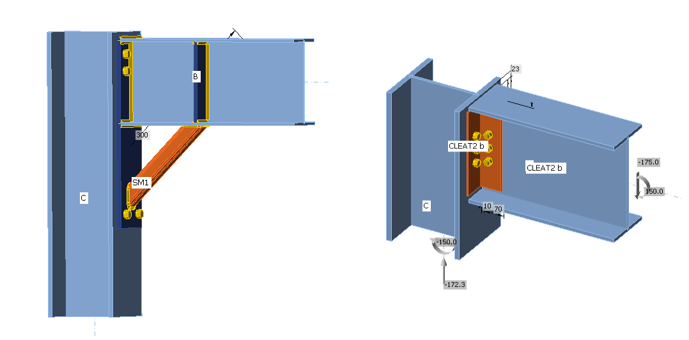

Status: 👷♂️ Work In Progress. Have a question relating to the topic? Please add an issue.
Beams
This data extends the properties of Design Members in the Structural Model for the purpose of designing a Connection. You can specify:
- Whether a beam is a Structural Member (loaded) or an Added Member (part of a Connection design, e.g. Cleats used to bolt Structural Members together)
- That a given Beam is Bearing, meaning that supports will be added in the model of the Connection
- Whether a beam is negative, meaning that it is only used to generate cuts and cut-outs on the other Beams
Added Members
Added Members are additional structural items that relate to a particular connection. Some examples are stiffening members or angle cleats.

Although typically relating to a single connection, added Members are references to Member1D's in the Open Model. Therefore, they need to be defined and added to the OpenModel as a Member1D (I.e by defining start/endpoints, LCS, and cross-section).
Once defined in the OpenModel, added members can be added to a specific connection ConnectionData as Beam Data with the IsAddedMember property set to true. The members should also be added to the ConnectionPoint ConnectedMembers` list as well.
The example below shows how the set the BeamData of an added member.
public static void Example_AddAddedMember(OpenModel openModel, int openModelMemberId)
{
//Reference Data Connection that has been defined in the OpenModel
ConnectionData connectionData = openModel.Connections[0];
BeamData addedMemberData = new BeamData();
//Set the beam data as an Added Member
addedMemberData.IsAdded = true;
//Reference previously created Member1D in the openModel
addedMemberData.AddedMember = new ReferenceElement(openModel.Member1D.FirstOrDefault(x => x.Id == openModelMemberId));
//Set Beam Data Id
addedMemberData.Id = connectionData.Beams.Count + 1;
connectionData.Beams.Add(addedMemberData);
}
Negative Volumes
WiP
Plates
Plates can now be defined using Region2D property.
Defining plates using an SVG string property is now obsolete.
Cuts
WiP
Welds
WiP
Bolt Grids
WiP
Anchors
WiP
Concrete Blocks
WiP